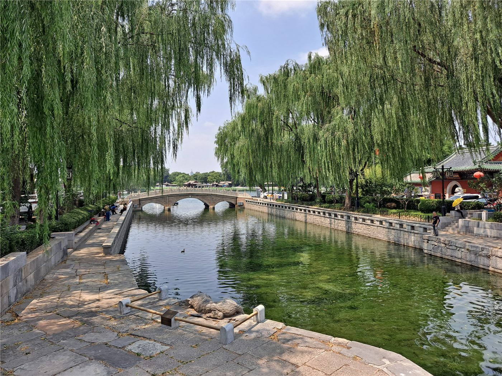

橋중국·문화
중국·문화단오 맞아 '마을 용선' 경기 열기… 古城에 울린 노 젓는 소리
단오절을 맞아 중국 곳곳에서 '마을 용선' 경기가 펼쳐졌다. 옛 성곽 도시의 물길 위로 북소리와 함성이 울려 퍼졌다.
단오절을 맞아 중국 곳곳에서 '마을 용선' 경기가 펼쳐졌다. 옛 성곽 도시의 물길 위로 북소리와 함성이 울려 퍼졌다.

중국 출신 심판 3명이 월드컵 한 경기에 함께 배정됐다. 아시아 심판진의 국제 무대 진출을 보여주는 사례다.

중국 저장성 닝보에서 융장 대교 건설이 차질 없이 진행되고 있다. 도시의 교통 연결성을 높이는 대형 기반시설 사업이다.

중국의 과학기술 성과를 소개하는 사진전이 러시아 모스크바에서 열렸다. 양국 간 과학·문화 교류의 한 장면이다.

중국이 국제사회를 향해 인도주의 위기 대응을 위한 적극적 행동을 촉구했다. 인도적 지원과 민간인 보호를 강조했다.

중국과 미얀마가 오랜 우호 관계를 강조했다. '胞波(형제) 정'으로 불리는 양국 관계의 역사를 되짚었다.
중국과 라틴아메리카의 협력이 양적 확대를 넘어 질적 도약 단계로 들어섰다는 진단이 나왔다. 무역과 투자 구조의 고도화가 화두다.

한 중국 학자가 유럽연합의 정책 기조가 현실주의 쪽으로 이동하고 있다는 진단을 내놨다. 규범과 이익 사이의 균형이 화두다.
반려동물과 함께하는 소비, 이른바 '它(반려)경제'가 문화·관광 소비의 새 흐름으로 떠올랐다. 동반 여행과 관련 서비스가 확장되고 있다.

중국 기업의 해외 진출이 제품 수출을 넘어 '가치와 이야기'를 전하는 단계로 나아가야 한다는 제언이 나왔다. 브랜드와 신뢰가 화두다.